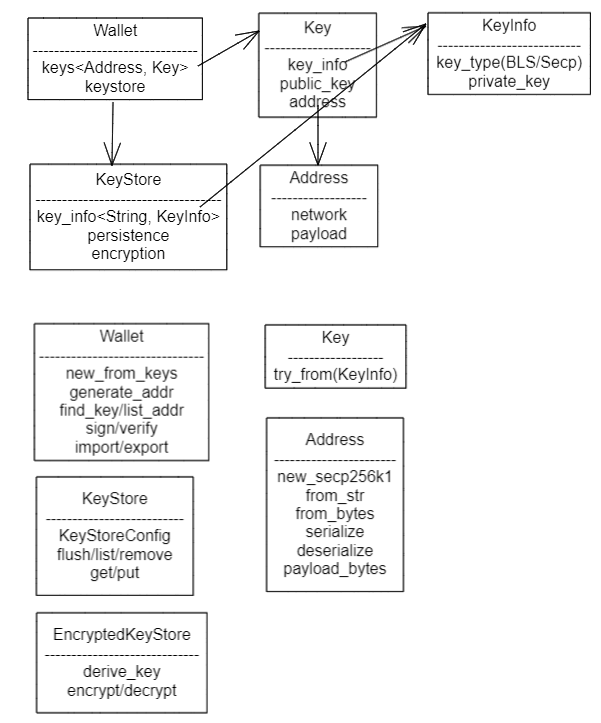

Forest的daemon、cli流程和钱包结构
July 05, 2022 -去年了解过Filecoin，对其Go版的实现lotus运行和分析过，源于对IPFS的兴趣。
今年学习零知识证明时，简单过了下ref_fvm，同时分析Filecoin的Rust版forest时，提交2个小PR，都是关于wallet的。顺带记录了些学习笔记如下。
forestd的目的很明确，为了充分验证lotus对spec实现的完整性和缺陷，可能是21年的那场"双花"问题
简单来说，就是人们对链的检查方式，这会呈现出消息被处理了两次的样子，进而产生了误解。 具体来说，就是部分数字资产平台使用了一种错误的处理链状态的方式——在tipset的每个块上调用ChainGetBlockMessages，然后在这些消息上调用StateGetReceipt。 而当StateGetReceipt被调用在两个相似的消息上（其中一个被执行，另一个被跳过），它将提供相同的结果给人，这就会导致给人一种两种消息都被执行的错觉。
使用中首先遇到的2个问题
- 每次cli操作都要输入passphrase
- jsonrpc错误后立即终止进程
项目维护人解释到，forest执行了严格的安全规范，高安全等级对应用的要去使然。其意已表明filecoin的开发策略是多角度保证其目标。
其中的jsonrpc错误后立即终止进程要求，为我提交的wallet list带来的修改会导致大量重构埋下了伏笔。
流程1，daemon的启动流程
- start
- read keystore
- start promithus
- print token
- init db
- chain_store, publish, set_genesis
- genesis, tipset, read_genesis_head
- libp2p
- mpoll
- consensus
- chainMuxer
- p2p
其中主要的task
- mining
- prometheus
- p2p
- rpc
- sync: chainMuxer
流程2，cli启动流程，wallet 子命令的流程
- 解析参数
- 构造jsonrpc参数
- jsonrpc
- 具体的api
> forest [wallet list | state lookup]
解析参数 *_cmd.rs [wallet_cmd | state_cmd ]
构造jsonrpc参数 *_opt.rs [wallet_opt | state_opt ]
call() -> jsonrpc:
reqest object { version, method, params, id }
response object { version, result, error, id }
key_mangement/wallet.rs
list_addr() // 从KeyStore或state里获取
钱包
我改动的部分是参照lotus
- list时能输出除Address外，还有此Address的Balance、Nonce、Default
- 将原来的list调用组合了对KeyStore的获取和state中的Balance的获取，但因json API中输出类型都是一个String，暂且去掉了Nonce
- wallet_balance().await().map_err(xxx)中，xxx遇到err后会终止进程。所以其后的unwarp()或expect()不会被执行，只是将Result里的String解绑出来
- lotus里有独立jsonrpc module处理("github.com/filecoin-project/go-jsonrpc")，没有错误后终止进程
钱包的简化功能
- 挣钱：新区块的签名，转账时签名
- 收钱：老区块的验签，接收转账时验签
钱包功能的约束
- 多设备：导入多出在设备之间
- 多账户：增删改查多个账户
账户的基本结构
- 私钥：分BLS聚合签和Secp256k1椭圆算法签名
- 公钥：对外提供的标识
- 地址：可视文本化的公钥
wallet数据结构
- Wallet { keys<Address, Key>, keystore }
- Key { KeyInfo, public_key, address }
- KeyInfo { key_type, private_key }
- Address { Net(main/test), payload(ID/Secp256k1/Actor/BLS) }
- KeyStore { key_info<addr, KeyInfo>, persistence, encryption } 
还有2个bug在分析中
k块同步问题，还在分析中，抽空攒个大块时间处理
- 输出错乱
INFO forest::daemon > Using network :: testnetnet
INFO genesis > Importing chain from snapshot
INFO genesis > Reading file...
Importing snapshot 3.34 GB / 3.91 GB [===============>--------
Importing snapshot 3.34 GB / 3.91 GB [======================================-] 85.73 % 2.35
Importing snapshot 3.39 GB / 3.91 GB [=
Importing snapshot 3.
ImportingScanning blockchain 1079961 / 1086061 [============] 99.44 % 116.94/s 52s
genesis > Accepting [Cid
- bad_block引起的循环不停的Bootstrapping
ERROR chain_sync::chain_muxer > Bootstrapping failed, re-evaluating the network head to retry the bootstrap. Error =
TipsetRangeSyncer(Validation("Validation error: Consensus error: StateManager error: failed to find state tree xxx "))